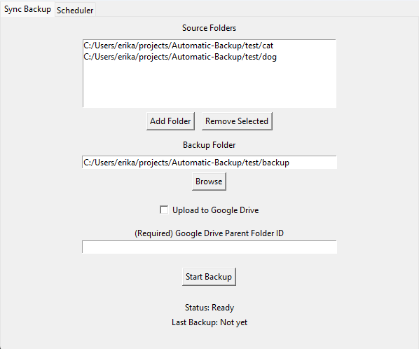

Automatic Back Up

Description:
This Python desktop application provides a user-friendly interface built with Tkinter for selecting multiple source folders and a destination folder to perform automated local backups.
It detects changes in source folders and creates timestamped backup copies.
The application supports optional uploads to Google Drive using PyDrive, maintains a log of the last backup time, and allows users to configure settings and schedule backups.
It uses Windows Task Scheduler to set scheduled times and enable automatic backups without user intervention.
Framework:
Tkinter
PyDrive
Standard Libraries – os, shutil, datetime, threading, etc.
Features:
Users can select multiple source folders to back up simultaneously.
Only backs up files that have changed since the last backup to save space and time.
Creates organized backup folders with timestamps for easy tracking and versioning.
Upload local backups to Google Drive using PyDrive for cloud storage and redundancy.
Performs backups in a separate thread to keep the UI responsive during operations.
Links: